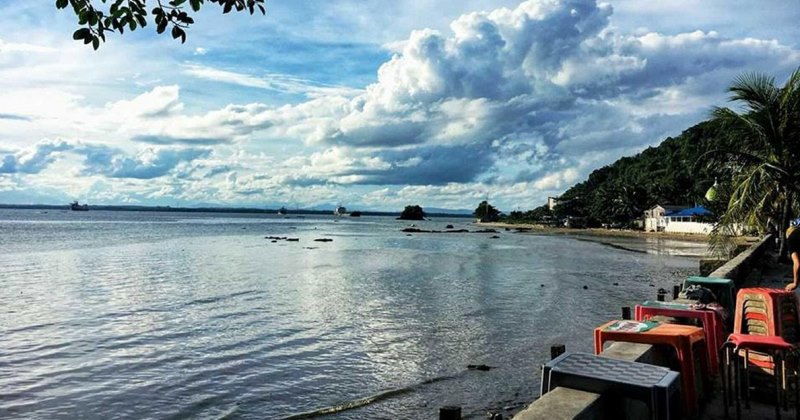
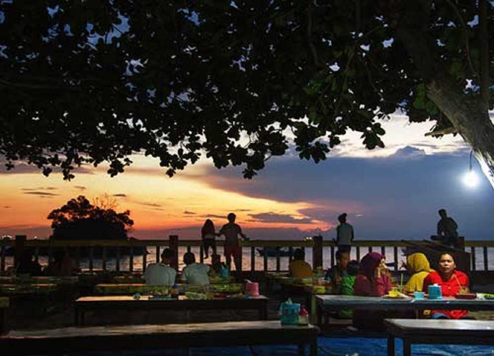
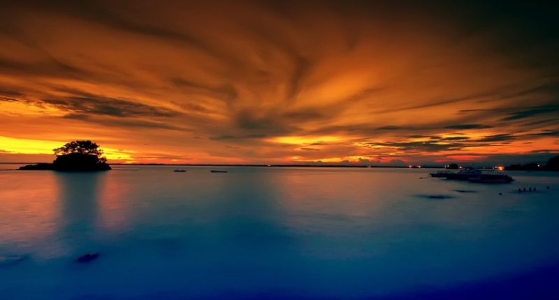

Tentang Pantai Melawai

Pantai Melawai berada di pinggir Jalan Jenderal Sudirman, Kota Balikpapan, Propinsi Kalimantan Timur.
Pantai Melawai menjadi ikon atau tempat nongkrong muda-mudi yang tinggal di Balikpapan serta pariwisata di pulau Kalimantan Indonesia
Pantai Melawai menjadi ikon atau tempat nongkrong muda-mudi yang tinggal di Balikpapan serta pariwisata di pulau Kalimantan Indonesia
Pantai Melawai bukanlah pantai yang luas dengan hamparan pasir yang panjang seperti pantai-pantai pada umumnya. Bila air pasang sudah datang maka pantai ini akan tenggelam, hanya terlihat gundukan kecil yang menyerupai bukit. Gundukan itu adalah batu karang. Masyarakat menyebut batu karang yang ada di tengah pantai itu dengan sebutan Pulau Tukung atau Pulau Babi. Pulau tersebut bisa dicapai dengan mudah saat air laut sedang surut. Namun jika datang air pasang segera kembali, jika tidak bisa-bisa Anda bisa terperangkap disana.
Pemandangan Alam yang Indah Khas Balikpapan

Ketika mengujungi tempat wisata alam, salah satu faktor yang sangat dipertimbangkan adalah keindahan alamnya. Pantai yang ada di kalimantan timur memiliki ciri khas tersendiri, sebagaimana Pantai Melawai yang menunjukkan pantai khas Balikpapan. Tak heran jika pantai ini menjadi salah satu ikon kota Balikpapan. Pantai Melawai menjadi tempat tujuan bagi para muda mudi setempat untuk nongkrong dan sekedar melepaskan pinat di akhir pekan.
Jika kebanyakan di pantai lain Anda akan menemukan hamparan pasir yang sangat luas dengan birunya ombak yang menghampiri setiap waktu, namun berbeda dengan pantai ini. Pantai Melawai tidak menyajikan keindahan pasir putihnya, melainkan adanya pemAnda ngan berupa air laut ditambah keunikan batu karang yang menyerupai bukit yang dikenal dengan pulau babi. Dinamakan demikian, karena di tempat ini ditemukan banyak hewan bulu babi.
Selain keindahan pantai dengan suguhan pulau babi, pantai melawai juga sangat populer dengan keindahan sunsetnya di waktu senja. Banyak pengunjung mendatangi pantai ini dengan tujuan melihat matahari terbenam. Hal ini dikarenakan pemAnda ngan matahari terbenam di Kalimantan timur cukup sulit ditemukan. Namun, karena letak Pantai Melawai yang terletak di teluk kecil, sehingga pemAnda ngan sunset di pantai ini dinilai menjadi pemAnda ngan sunset terbaik.
Menikmati Beragam kuliner di Sekitar Pantai Melawai

Selain keindahan alamnya yang mempesona, Pantai Melawai juga menyajikan beragam kuliner yang bisa dinikmati oleh pengunjungnya. Di sepanjang jalanan pantai, Anda akan menemukan banyak kafe yang menjual aneka makanan dan minuman untuk para wisatawan. Tidak hanya itu, di sini juga terdapat banyak penjual dagang yang menggunakan gerobak dan menjajakan makanannya mulai dari jajanan hingga makanan berat.
Salah satu makanan yang menjadi favorit di tempat ini adalah jagung bakar yang manis dan hangat ketika sore hari. Selain itu, Anda juga bisa menemukan menu makanan seafood dengan masakan yang lezat. Makanan seperti pecel lele, ayam dan ikan bakar juga bisa Anda temukan dengan mudah di sekitar pantai Melawai. Beragam minuman yang dijual di sini mulai dari kopi hangat, es teh hingga jus.
Adanya pilihan kuliner inilah yang menjadi salah satu daya tarik tersendiri dari Pantai Melawai. Liburan di sini, pastinya tidak akan membosankan. Dijamin makanan di sini memiliki rasa yang enak dan tidak mengecewakan. Harga untuk perporsinya juga stAnda r sehingga tidak akan membuat kantong Anda kering. Jadi tidak perlu khawatir jika lupa membawa bekal makanan. Anda tinggal memilih makanan yang sesuai selera, ketika merasa lapar.
Karena adanya beragam kuliner yang cukup menggoda, tak heran jika pantai ini menjadi pusat kuliner yang ada di kota Balikpapan. Jika Anda berkeinginan untuk menghabiskan waktu di malam hari bersama teman dan keluarga, maka tempat yang paling tepat untuk dikunjungi adalah Pantai Melawai. Anda dan orang terdekat bisa melihat keindahan pemAnda ngan pantai dan menikmati kuliner sambil duduk lesehan. Sangat lengkap bukan?
Akses yang Cukup Mudah Menuju Pantai Melawai

Salah satu faktor yang membuat pantai ini banyak pengunjung adalah akses menuju lokasi yang cukup mudah. Jadi tidak perlu khawatir lagi dengan medan yang berkelok dan naik turun, karena Anda tidak akan menemukannya di sini. Lokasi Pantai Melawai cukup strategis karena berada di dekat Pelabuhan Semayang Balikpapan dan Teluk Banua Patra, lebih tepatnya di jalan Sudirman. Pantai ini juga tidak jauh dari pusat kota Balikpapan sehingga Anda tidak akan kesulitan menemukannya.
Jika Anda mengunjungi pantai ini dari pusat kota, maka Anda harus menempuh jarak sekitar 3 kilometer dengan waktu perjalanan yang dibutuhkan sekitar 15 menit. Untuk bisa sampai di pantai ini, Anda bisa menggunakan kendaraan umum seperti angkutan kota maupun taksi. Biasanya angkutan kota yang melewati pantai ini adalah angkutan kota nomor 6 atau 3. Anda juga bisa menggunakan kendaraan pribadi, karena di sini juga di sediakan tempat parkir.
Selain kemudahan akses serta lokasinya yang cukup strategis, di sini Anda juga bisa mendapatkan liburan yang terjangkau. Tiket masuk di sini cukup murah dan yang paling menarik lagi adalah Anda tidak perlu hawatir jika mengunjungi pantai ini dalam kondisi ditutup, karena pantai ini dibuka selama 24 jam. Bahkan ketika malam yaitu di atas jam 20.00 malam, pantai ini cukup ramai oleh pengunjung.